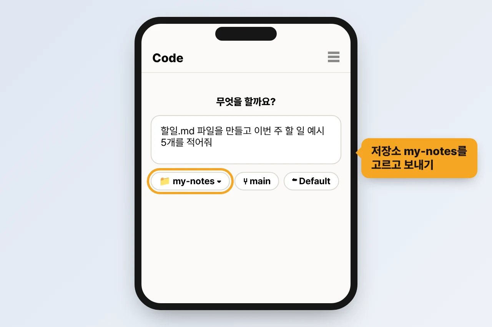
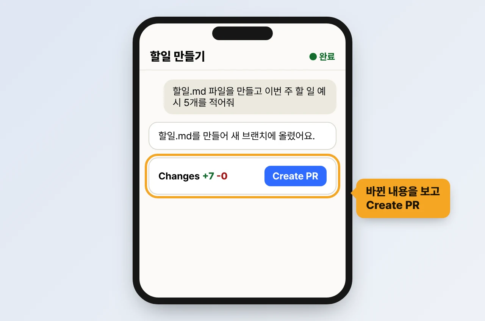
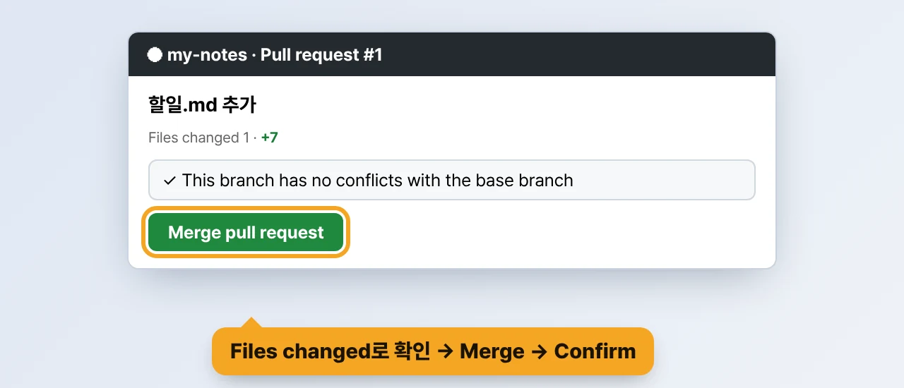
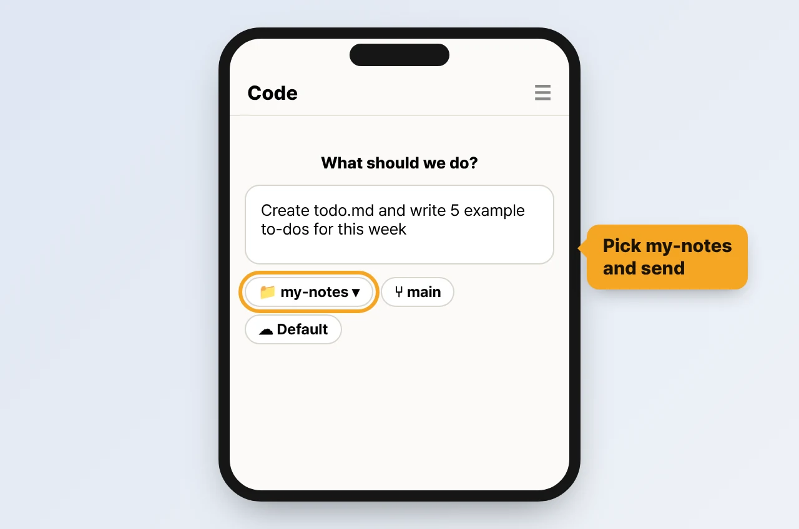
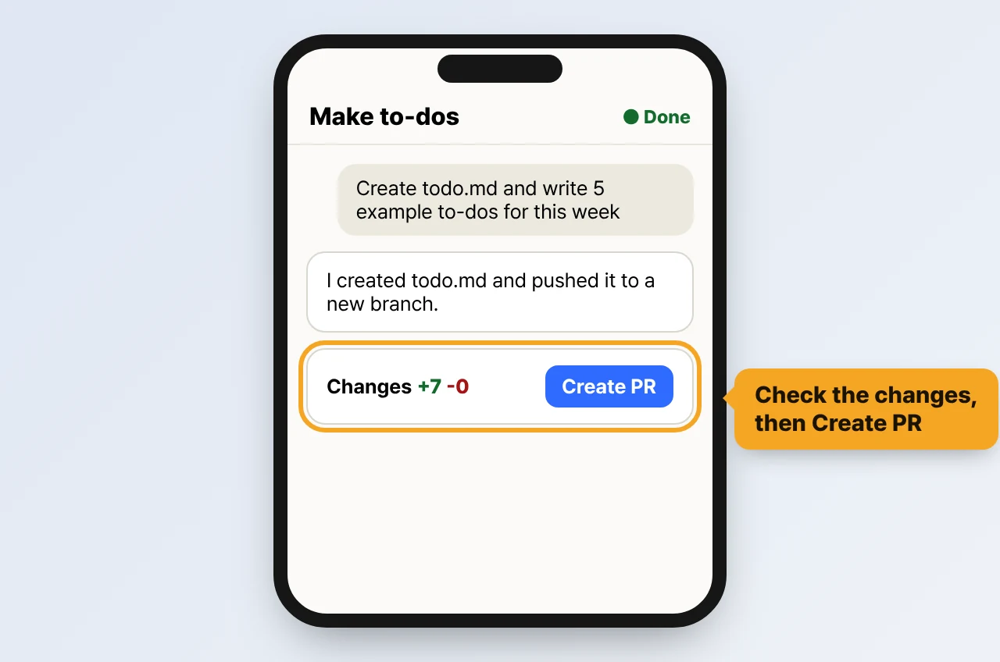
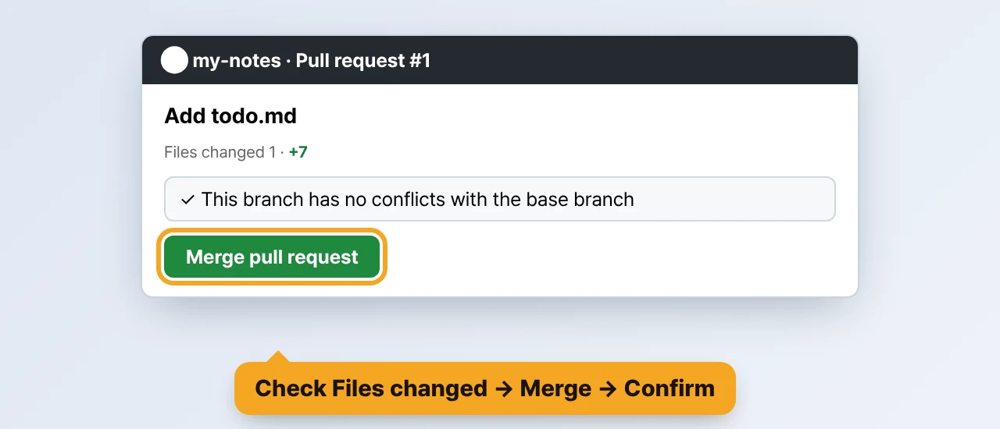

👆 이 내용은 버튼 따라 하는 실습으로도 있어요. 처음이라면 실습으로 직접 해 보고, 이 글은 복습할 때 보세요. 실습 시작하기 →
※ 글 속 그림은 따라 하기 쉽도록 그린 예시입니다. 실제 앱 화면과 모양·글자가 조금 다를 수 있어요.
이게 뭔가요?
휴대폰만으로 Claude에게 일을 시키고, 결과를 내 메모 저장소(my-notes)에 반영하는 방법이에요. Claude는 인터넷 위의 컴퓨터(클라우드)에서 일하기 때문에 내 컴퓨터는 꺼져 있어도 돼요.
| 휴대폰 1 (Remote Control) | 휴대폰 3 (클라우드) | |
|---|---|---|
| 일하는 곳 | 켜 둔 내 컴퓨터 | 클라우드 (컴퓨터 꺼져도 됨) |
| 파일이 있는 곳 | 내 컴퓨터의 연습 폴더 | GitHub 저장소 my-notes |
| 안전장치 | 허락 카드 | 새 가지 → PR → 병합 |
0. 먼저 준비할 것
- 휴대폰 2편에서 만든 비공개 저장소 my-notes (Claude 연결·앱 설치까지)
- 휴대폰 Claude 앱 (유료 계정으로 로그인)
먼저 알아 두기 — 허락 카드 대신 '병합'
클라우드에서는 Claude가 허락을 묻지 않고 일해요. 대신 원본(main)을 바로 바꾸지 않고, 따로 만든 새 가지(브랜치)에만 저장해요. 내가 보고 병합해야 비로소 원본이 바뀌어요.
| 낱말 | 뜻 |
|---|---|
| 브랜치 | 원본(main)을 건드리지 않고 따로 고쳐 보는 사본 가지 |
| PR (풀 리퀘스트) | "이 가지를 원본에 합쳐도 될까요?"라는 검토 요청 |
| 병합 (Merge) | 내가 확인하고 원본에 합치기. 이때 my-notes가 바뀌어요 |
1. 휴대폰으로 할 일 보내기
- 휴대폰 Claude 앱 → 메뉴의 Code.
- 입력 칸 아래에서 저장소를 my-notes로 고릅니다. 브랜치는 main, 환경은 Default 그대로 둬요.
- 아래 문장을 보냅니다.
할일.md 파일을 만들고 이번 주 할 일 예시 5개를 적어줘
.md는 메모장으로도 열리는 글 파일이에요. 제목·목록 같은 꾸밈을 간단한 기호로 적어요.
2. 기다렸다가 결과 확인하기
클라우드 컴퓨터를 준비하고 일하느라 몇 분 걸릴 수 있어요. 앱을 닫아도 계속 일해요. 완료 알림이 오지 않을 수 있으니, 잠시 뒤 대화를 다시 열어 보세요.
- "새 브랜치에 올렸다"는 말과 Changes(바뀐 줄 수, 예: +7)가 보이면 끝난 거예요.
- Changes의 숫자를 누르면 바뀐 내용을 볼 수 있어요. 앱에 안 보이면 휴대폰 브라우저로 claude.ai/code에서 같은 대화를 여세요.

3. PR(검토 요청) 만들기
지금 할일.md는 새 가지에만 있어요. 원본에 합치려면 먼저 PR을 만들어요.
- Create PR 버튼이 보이면 누르세요. 제목과 설명은 자동으로 채워져요.
- 버튼이 안 보이면 대화창에 "PR 만들어줘"라고 보내도 돼요.
4. GitHub에서 확인하고 병합하기
- 휴대폰 브라우저(또는 GitHub 앱)로 github.com → my-notes → Pull requests → 방금 만든 PR.
- Files changed에서 할일.md 내용을 확인합니다.
- 괜찮으면 Merge pull request → Confirm merge.
- my-notes 첫 화면(Code)에 할일.md가 보이면 끝!

5. 다음에 쓸 때 · 조심할 점
- 같은 일을 이어서: 앱 Code 목록에서 그 대화를 다시 열고 말하세요.
- 새 일: 새 대화에서 my-notes를 골라 시작하세요. 그때마다 새 가지 → PR → 병합.
- 사용량: 클라우드도 채팅·데스크톱과 같은 사용량을 써요. (데스크톱 8편)
- 한동안 아무것도 안 하면 세션이 쉬기도 해요. 다시 열고 "이어서 해줘"라고 하세요.
- 민감한 정보 금지: 비밀번호·계좌번호·남의 개인정보는 저장소에 넣지 마세요.
잘 안 될 때
| 이런 경우 | 이렇게 하세요 |
|---|---|
| 저장소 목록에 my-notes가 없어요 | 휴대폰 2편의 '앱 설치' 단계를 확인하세요. |
| 오래 걸리거나 멈춘 것 같아요 | 처음에는 더 걸려요. 5분쯤 기다리고, Claude가 질문을 남겼는지 대화를 열어 보세요. |
| Create PR 버튼이 없어요 | "PR 만들어줘"라고 보내거나, 휴대폰 브라우저로 claude.ai/code에서 같은 대화를 여세요. |
| Merge 버튼이 회색이에요 | 충돌이 있다는 뜻이에요. Claude에게 "PR 충돌 해결해줘"라고 하세요. |
오늘 배운 것
- 휴대폰 앱 Code → 저장소 고르기 → 할 일 보내기. 컴퓨터는 꺼져 있어도 된다.
- 클라우드에는 허락 카드가 없다. 대신 새 가지 → PR → 병합.
- 병합 전에 Files changed를 꼭 읽는다. 병합이 최종 허락이다.
* The pictures are drawn examples to make the steps easy to follow. Real app screens may look slightly different.
What is this?
Using only your phone, you give Claude a job and land the result in your notes repository (my-notes). Claude works on a computer on the internet (the cloud), so your computer can be off.
| Phone 1 (Remote Control) | Phone 3 (cloud) | |
|---|---|---|
| Where it works | Your computer, left on | The cloud (computer can be off) |
| Where files live | The Practice folder on your computer | GitHub repository my-notes |
| Safety net | Permission cards | New branch → PR → merge |
0. What you need
- The private repository my-notes from Phone 2 (connected, with the app installed)
- The Claude phone app, signed in with a paid account
First: merging instead of permission cards
In the cloud, Claude works without asking permission. Instead, it doesn't touch the original (main); it saves only to a separate new branch. The original changes only when you review it and merge.
| Word | Meaning |
|---|---|
| Branch | A side copy for changes, leaving the original (main) untouched |
| PR (pull request) | A review request: "May I merge this branch into the original?" |
| Merge | You check it and combine it into the original. Only then does my-notes change |
1. Send a job from your phone
- Claude phone app → Code in the menu.
- Under the typing box, pick the repository my-notes. Leave the branch as main and the environment as Default.
- Send the sentence below.
Create todo.md and write 5 example to-dos for this week
.md is a text file that opens in any text editor. It marks headings and lists with simple symbols.
2. Wait, then check the result
Setting up the cloud computer and working can take a few minutes. It keeps working even if you close the app. You may not get a notification, so reopen the chat after a while.
- When you see that it pushed to a new branch and a Changes count (e.g. +7), it's done.
- Tap the Changes numbers to see what changed. If the app doesn't show it, open the same chat at claude.ai/code in your phone browser.

3. Create a PR (review request)
Right now todo.md only exists on the new branch. To merge it into the original, first make a PR.
- If you see a Create PR button, tap it. The title and description are filled in for you.
- No button? Send "Create a PR" in the chat.
4. Check and merge on GitHub
- In your phone browser (or the GitHub app): github.com → my-notes → Pull requests → the PR you just made.
- Check todo.md under Files changed.
- If it's fine: Merge pull request → Confirm merge.
- When todo.md shows on my-notes' front page (Code), you're done!

5. Next time · be careful
- Continue the same job: reopen that chat in the app's Code list and keep talking.
- New job: start a new chat and pick my-notes. Each time: new branch → PR → merge.
- Usage: the cloud uses the same limits as chat and desktop. (Desktop 8)
- Idle sessions can pause. Reopen and say "carry on".
- No sensitive data: keep passwords, account numbers and other people's personal data out of the repository.
If it doesn't work
| If this happens | Do this |
|---|---|
| my-notes isn't in the repository list | Check the 'Install the app' step in Phone 2. |
| It's slow or seems stuck | The first run takes longer. Wait about 5 minutes, and open the chat in case Claude asked you something. |
| No Create PR button | Send "Create a PR", or open the same chat at claude.ai/code in your phone browser. |
| The Merge button is grey | There's a conflict. Tell Claude "Resolve the PR conflict." |
What you learned today
- Phone app Code → pick a repository → send a job. Your computer can be off.
- No permission cards in the cloud. Instead: new branch → PR → merge.
- Always read Files changed before merging. Merging is your final permission.